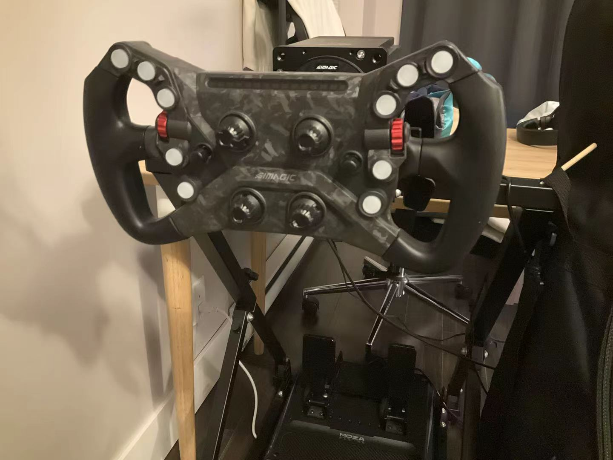
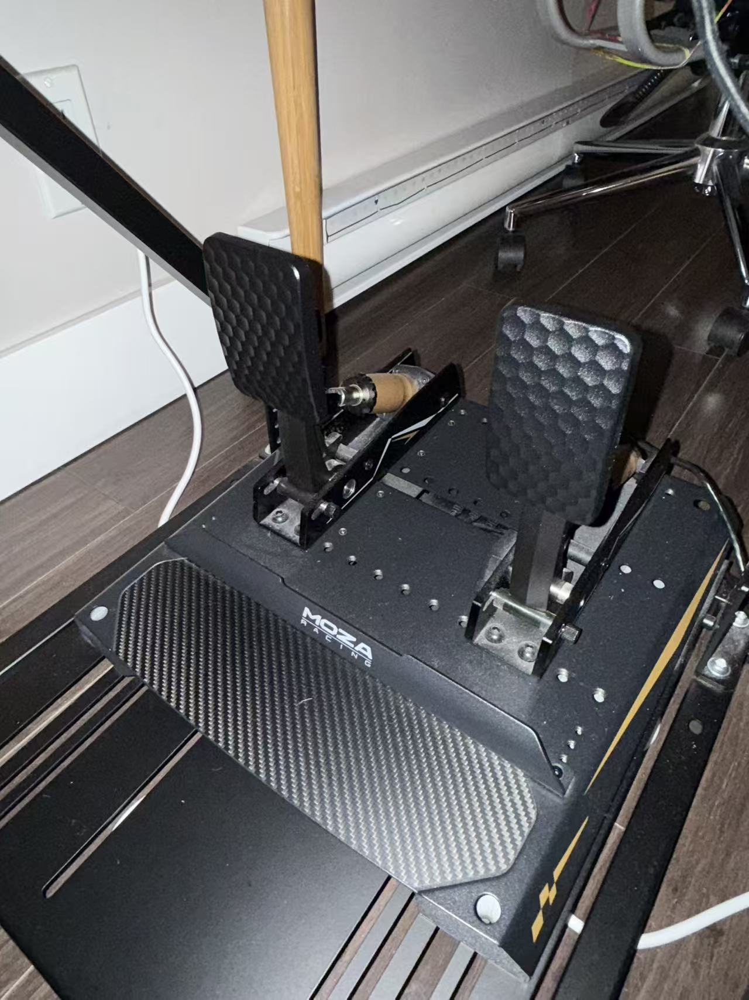
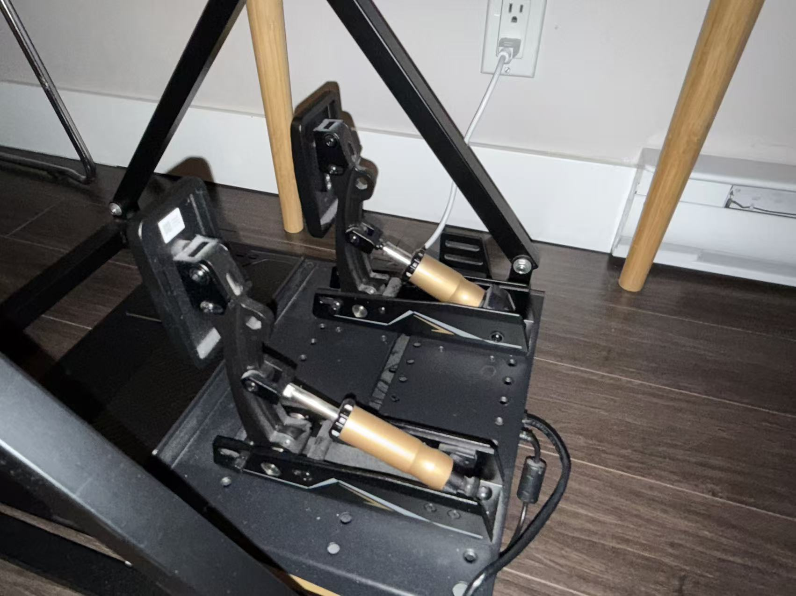

Arcade Racing
Usually focuses more on accessibility and entertainment. Vehicle behaviour may be simplified to make the game easier to learn.
03 / SIM RACING
Sim racing combines racing software with steering, pedal and visual hardware to recreate important parts of driving and competition.
Real motorsport requires a vehicle, track access, tyres, fuel, repairs, transport and safety equipment.
Sim racing gives enthusiasts a much more accessible way to learn circuits, practise driving techniques and compete with other people.
A simulator cannot reproduce every real physical force or risk, but it can recreate useful concepts such as braking points, racing lines, vehicle balance and racecraft.

Usually focuses more on accessibility and entertainment. Vehicle behaviour may be simplified to make the game easier to learn.
Usually puts more importance on braking, tyre grip, car balance, consistency and realistic vehicle behaviour.
The driver turns a steering wheel and uses throttle and brake pedals.
The simulator calculates how the virtual car responds to the driver's actions.
A monitor, triple-screen setup or VR headset shows the virtual track and vehicle.
The wheelbase can create resistance and movement that communicates information about steering and tyre behaviour.


A simulator makes repetition easy. You can practise the same circuit and corner many times without using tyres, fuel or track time.
Beginners can learn circuits, practise braking points, understand racing lines and become more comfortable driving close to other cars.
Online racing can also teach awareness, consistency and responsibility for avoiding contact.